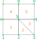

Variable stride arrays
This page presents the concept of variable stride array objects and an utility class to manipulate it.
Rationale
A variable stride array (hereafter VS array) is conceptually an array of \(N\) arrays, where each subarray have a different size but the same datatype. This differs from multidimensional arrays (such as numpy ndarray) which have a rectangular shape.
A typical usage of VS array is the representation of mesh connectivities, since the number of neighbor is not the same for each entity of the mesh. For exemple, if we want to describe the vertex-to-cell connectivity of the following mesh,
{kind=link}

we would have the single value 1 for the first vertex, then the pair of values (1,2) for the second vertex, the pair of values (2,3) for the third vertex, etc. The vertex most connected vertex is n°5 for which we would have the five values (1,2,3,4,5).
A VS array could be implemented as a list of arrays (here [[1], [1,2], [2,3], ..., [5]]),
but for performance issues, it is often preferable to store the data in a single memory contiguous buffer.
We call it the values of the VS array. Therefore, an additional information is needed
to know where starts and ends each subarray: we can use either
a counting array
countsof size \(N\), wherecounts[i]store the lenght of the i-th subarray,or a displacements array
displsof size \(N+1\), wheredispls[i]store the starting position of the i-th subarray in thevaluesarray.#Index 0 1 2 3 4 5 6 7 8 counts = [1, 2, 2, 2, 5, 2, 1, 2, 1] displs = [0, 1, 3, 5 7, 12, 14,15, 17, 18] values = [1, 1, 2, 2, 3, 1, 4, 1, 2, 3, 4, 5, 3, 5, 4, 4, 5, 5]
Note that counts and displs are redondant: in the data structure described here, it is not permitted
to use the displs array to jump over some parts of values or to change the order of elements.
Thus, the following properties holds:
counts ≥ 0andcounts.sum() == values.sizedispls[i+1] = displs[i] + counts[i], withdispls[0] = 0. In particular,displs[N]==values.size.
In the remaining of this page, we will use the term strides to designate
this virtual slicing of the VS array. The subarrays, who are thus sections of the
values arrays, will be called blocks. We emphasize the fact that an element
of the VS array is a whole block.
Note
The CGNS standard uses the
displsoption to describe polyedric elements; this is the purpose of theElementStartOffsetnode.In sparse linear algebra, the CSR data structure is quite similar to a VS array, with the difference that CSR stores an additional array containing the column index of its elements.
Python module
Maia provides the vstride module in order to operate on such data structure.
This module defines the VStrideArray class as well as some functions
operating on VS arrays.
For now, the underlying fields of a VS array are represented by numpy arrays.
The values array is allowed to have any supported datatype, while the counts
and displs arrays are requested to be integer arrays of same datatype
(either int32 or int64).
Tip
In this documentation, the module namespace is denoted vs, while np designate the
numpy module:
>>> import numpy as np
>>> from maia.utils import vstride as vs
The VStrideArray object
- class VStrideArray
A class representing a variable stride array.
Once created, a
VStrideArrayinstancearrhas the following attributes:displsview on displs array
countsview on counts array
valuesvalues array
dsizesize of the underlying
valuesarraydtypedatatype of the underlying
valuesarrayIn addition, the following operations are supported:
Length:
len(arr)returns the number of elements N.Basic indexing:
arr[i]returns the i-th block, ie a view on thevaluesarray.Basic assignement:
arr[i] = valreplace the \(m_i\) values of the i-th block using the provided inputval, which must be an array of relevant size \(m_i\) or a scalar (it will be broadcasted).
Warning
We strongly advise to not iterate over blocks using python loops such as
func(blk) for blk in arr. As for numpy arrays, this would lead to poor performances. Several functions or methods are provided to avoid such loops.Unary arithmetic operations
-,+,abs()and~applies element wise on thevaluesarray.Binary arithmetic operations (such as
+,-,*,/,%,**,&, etc.) and comparison operation (such as==,!=,<,>=, etc.) also apply element wise on thevaluesarray. The right operand can be:another
VStrideArrayobject. In this case, the strides of the two operand must be equal:>>> a = vs.from_counts([2,2,1], [0.2, 1.4, 2.6, 0.5, 1.0]) >>> b = vs.from_counts([2,2,1], [0.1, 2.3, 1.4, 0.6, 0.9]) >>> a <= b vsarray([ [False, True], [False, True], [False], ], dtype=bool)
a numpy array of size \(N\). In this case, each value will be repeated \(m_i\) times:
>>> vs.from_counts([2,2,1], np.arange(5)) + np.arange(3) vsarray([ [0, 1], [3, 4], [6], ], dtype=int64)
a scalar value. In this case, it will we broadcasted to a constant array of size
values.size:>>> vs.from_counts([2,2,1], np.arange(5)) * 2 vsarray([ [0, 2], [4, 6], [8], ], dtype=int64)
These operations return a new
VStrideArrayinstance. The output dtype of itsvaluesarray is determined by numpy, to which the operation itself is delegated.Inplace arithmetic operations (such as
+=,-=,*=, etc.) are also supported under the same conditions for the right operand.
- __init__(displs, counts, values)
Create a new
VStrideArrayobject.At least one of
displsorcountsargument must not beNone. The argumentvaluesmust never beNone.- Parameters:
displs (integer ndarray, optional) – array of displs or None
counts (integer ndarray, optional) – array of counts or None
values (ndarray) – array of values
Example
>>> vs.VStrideArray(None, np.array([3,5,2]), np.arange(10)) vsarray([ [0, 1, 2], [3, 4, 5, 6, 7], [8, 9], ], dtype=int64)
- reduce(op)
Apply a reduction operation within each block.
The avalaible operations are the members of the enumeration
ReduceOp.This function returns an array of size \(N\) (one value per block). The datatype of the output array depends on the input datatype and the requested operation: it is generally the same than the input datatype, excepted for logical operations that always return boolean arrays and for
ReduceOp.SUMthat returnint64when applied to a boolean input.Note
For empty blocks (ie for the set of
isuch thatcounts[i] == 0), the corresponding resultout[i]will be initialized with the neutral value of the corresponding operation.It is still possible to filter the result afterward, eg with
out[self.counts > 0].- Parameters:
op (
ReduceOp) – operation performed to reduce the blocks- Returns:
flat ndarray of size N – result of the reduction
Example
>>> a = vs.from_counts([3,5,2], np.arange(10)) >>> a.reduce(vs.ReduceOp.SUM) array([ 3, 25, 17])
- restride(displs=None, counts=None)
Change the strides (
countsanddispls) of the array, without updating itsvalues.Eiher a new
displsor a newcountsarray can be provided. If both arguments areNone, the object remain unchanged. Note that the new strides must be compatible with thearray.dsizeattribute.Example
>>> a = vs.from_counts([1, 2, 5], [0.4, 0.3, 0.5, 0.1, 0.7, 0.2, 0.6, 0.9]) >>> a.restride(counts=[4,4]) >>> a vsarray([ [0.4, 0.3, 0.5, 0.1], [0.7, 0.2, 0.6, 0.9], ], dtype=float64)
- to_array_list()
Return the
valuesas a list of NumPy 1d arrays.The len of the output list is
N, and the size of each elementiiscounts[i]. Data is copied into the 1d arrays.- Returns:
list of ndarray – values as a list of 1d arrays
Example
>>> a = vs.from_counts([0, 2, 5], [0.3, 0.5, 0.1, 0.7, 0.2, 0.6, 0.9]) >>> a.to_array_list() [array([], dtype=float64), array([0.3, 0.5]), array([0.1, 0.7, 0.2, 0.6, 0.9])]
- to_masked_array()
Return the
valuesas a NumPy masked ndarray.Output is a 2d array of shape
(N, max(counts)), where the masked value is used to complete each rowifor whichcounts[i] < max(counts). Data is copied into the masked array.- Returns:
masked ndarray – values as a masked array
Example
>>> a = vs.from_displs([0,3,6,6,8,9], [1,3,3,4,5,6,7,8,10]) >>> print(a.to_masked_array()) [[1 3 3] [4 5 6] [-- -- --] [7 8 --] [10 -- --]]
Arrays routines
The vstride module provides the following routines in order to create or
manipulate VStrideArray instances:
Creation routines : these routines offer shortcuts to create a new VStrideArray from other input data.
Create a new instance from the input data. |
|
Create a new instance from a 1d array described by its |
|
Create a new instance from a 1d array described by its |
Indexing routines : these routines create a new VStrideArray by acting on the
specified indices of the input array.
Take elements from the input VS array. |
|
Update the specified elements of input VS array with provided values. |
|
Insert new elements in the input VS array. |
|
Remove elements from the input VS array. |
Algorithms : these routines apply an algorithm to VStrideArray object.
All these functions take a parameter axis to indicate if the algorithm is applied:
independantly on each block of the array (using
INNER_AXIS);globally over the elements of the array (using
OUTER_AXIS).
Reverse the order of values of the input VS array. |
|
Sort the values of the input VS array. |
|
Find the unique values of the input VS array. |
|
Roll the values of the input VS array. |
|
Join a sequence of VS arrays. |
Additional operators : few operators that are not part of language keywords, or additional comparison functions.
Create a new VS array storing the sign of |
|
|
|
|
|
|
- array(data, *, dtype=None)
Create a new instance from the input data.
Input data can be either:
a list of objects convertible to a 1d ndarray. This include eg list of lists, list of arrays, but not list of scalars;
a 2d masked ndarray, in which case only visible values are selected;
another
VStrideArrayinstance.
Input data is always copied to create the new VS array.
- Parameters:
data (object) – see above
dtype (data-type, optional) – expected datatype of the
valuesarray. IfNone, datatype is inferred by NumPy from the input data.
- Returns:
VStrideArray– new VS array
Examples
>>> vs.array([[1,2], [3,4,5], [], [6]]) # From nested lists vsarray([ [1, 2], [3, 4, 5], [], [6], ], dtype=int64) >>> data = np.ma.array([[1, 2, 3], [4,5,6], [7, 8, 9]], # From masked array ... mask=[[0, 0, 1], [0,0,0], [0,1,1]]) >>> vs.array(data) vsarray([ [1, 2], [4, 5, 6], [7], ], dtype=int64)
- from_counts(counts, values, *, dtype=None)
Create a new instance from a 1d array described by its
counts.Arguments are converted to ndarray using np.asarray: this operation is copyless if arguments are already ndarray objects and if
valuesmatches the requested datatype.- Parameters:
counts (array_like) – an object convertible to a 1d integer ndarray
values (array_like) – an object convertible to a 1d ndarray
dtype (data-type, optional) – override datatype of the
valuesarray. IfNone, datatype is inferred from the input data.
- Returns:
VStrideArray– new VS array
Example
>>> vs.from_counts([0, 2, 5], [0.3, 0.5, 0.1, 0.7, 0.2, 0.6, 0.9]) vsarray([ [], [0.3, 0.5], [0.1, 0.7, 0.2, 0.6, 0.9], ], dtype=float64)
- from_displs(displs, values, *, dtype=None)
Create a new instance from a 1d array described by its
displs.Arguments are converted to ndarray using np.asarray: this operation is copyless if arguments are already ndarray objects and if
valuesmatches the requested datatype.- Parameters:
displs (array_like) – an object convertible to a 1d integer ndarray
values (array_like) – an object convertible to a 1d ndarray
dtype (data-type, optional) – override datatype of the
valuesarray. IfNone, datatype is inferred from the input data.
- Returns:
VStrideArray– new VS array
Example
>>> vs.from_displs([0, 2, 5], [0.3, 0.5, 0.1, 0.7, 0.2], dtype='f4') vsarray([ [0.3, 0.5], [0.1, 0.7, 0.2], ], dtype=float32)
- take(array, indices)
Take elements from the input VS array.
Indices to extract directly refer to elements number, and must thus be included in
[0, len(array)[. A given index can be provided more than once.A new object is returned.
- Parameters:
array (
VStrideArray) – input VS arrayindices (array of int) – indices of the elements to extract
- Returns:
VStrideArray– extracted VS array
Example
>>> a = vs.from_displs([0, 2, 4, 6, 9, 10], values=np.arange(10)) >>> vs.take(a, [2, 1, 4, 1]) vsarray([ [4, 5], [2, 3], [9], [2, 3], ], dtype=int64)
- put(array, indices, values)
Update the specified elements of input VS array with provided values.
Indices to update directly refer to elements number, and must thus be included in
[0, len(array)[. A given index can be provided more than once; in this case, only the last corresponding value is used.The new
valuesmust be provided as aVStrideArrayof lenghtlen(indices). Its datatype will be converted if needed to matcharray.dtype.If
indicesis a scalar value, then a single 1d array_like object is allowed forvalues.Note
Contrary to np.put, this function does not operate inplace, since the strides of the input VS array can be modified. A new object is returned.
- Parameters:
array (
VStrideArray) – input VS arrayindices (int or array of int) – indices of the elements to update
values (array_like or
VStrideArray) – block(s) to write
- Returns:
VStrideArray– updated VS array
Example
>>> a = vs.from_counts([2, 3, 1, 3], np.arange(9)) >>> vals = vs.array([[-1,-2,-3,-4], [99]]) >>> vs.put(a, [2,0], vals) vsarray([ [99], [ 2, 3, 4], [-1, -2, -3, -4], [ 6, 7, 8], ], dtype=int64)
- delete(array, indices)
Remove elements from the input VS array.
Indices to delete directly refer to elements number, and must thus be included in
[0, len(array)[.A new object is returned.
- Parameters:
array (
VStrideArray) – input VS arrayindices (array of int) – indices of the elements to remove
- Returns:
VStrideArray– filtered VS array
Example
>>> a = vs.from_displs([0, 2, 4, 6, 9, 10], np.arange(10)) >>> vs.delete(a, [2, 1, 4]) vsarray([ [0, 1], [6, 7, 8], ], dtype=int64)
- insert(array, indices, values)
Insert new elements in the input VS array.
The indices where the new block(s) are insered must be included in
[0, len(array)]. The inseredvaluesmust be provided as aVStrideArrayof lengthlen(indices). Its datatype will be converted if needed to matcharray.dtype.If
indicesis a scalar value, then a single 1d array_like object is expected forvalues.A new object is returned.
- Parameters:
array (
VStrideArray) – input VS arrayindex (int of array of int) – position where the block(s) should be insered
values (array_like or
VStrideArray) – block(s) to insert
- Returns:
VStrideArray– new VS array
Example
>>> a = vs.from_counts([2, 4, 3], np.arange(9)) >>> vs.insert(a, 1, [9,10,11]) vsarray([ [ 0, 1], [ 9, 10, 11], [ 2, 3, 4, 5], [ 6, 7, 8], ], dtype=int64)
- flip(array, axis)
Reverse the order of values of the input VS array.
Depending on the
axisargument, the operation reverse:the order of blocks if
axis==OUTER_AXIS, which is roughly equivalent tovs.array([blk for blk in array][::-1])
each block independently if
axis==INNER_AXIS, which is roughly equivalent tovs.array([blk[::-1] for blk in array)]
In both cases, a copy is done and a new object is returned.
- Parameters:
array (
VStrideArray) – input VS arrayaxis (
Axis) – direction used to reverse
- Returns:
VStrideArray– flipped VS array
Example
>>> a = vs.from_counts([2, 4, 3], np.arange(9)) >>> vs.flip(a, vs.OUTER_AXIS) vsarray([ [6, 7, 8], [2, 3, 4, 5], [0, 1], ], dtype=int64) >>> vs.flip(a, vs.INNER_AXIS) vsarray([ [1, 0], [5, 4, 3, 2], [8, 7, 6], ], dtype=int64)
- sort(array, axis)
Sort the values of the input VS array.
Depending on the
axisargument, the operation sort:the elements if
axis==OUTER_AXIS, which is roughly equivalent tovs.array(sorted([blk for blk in array]))
In this case, lexicographic order is used to compare two blocks.
each block if
axis==INNER_AXIS, which is roughly equivalent tovs.array([sort(blk) for blk in array)]
In both cases, a copy is done and a new VStrideArray is returned.
- Parameters:
array (
VStrideArray) – input VS arrayaxis (
Axis) – direction used to sort
- Returns:
VStrideArray– sorted VS array
Example
>>> a = vs.from_counts([2, 4, 3], [3,2, 3,1,5,2, 9,5,8]) >>> vs.sort(a, vs.OUTER_AXIS) vsarray([ [3, 1, 5, 2], [3, 2], [9, 5, 8], ], dtype=int64) >>> vs.sort(a, vs.INNER_AXIS) vsarray([ [2, 3], [1, 2, 3, 5], [5, 8, 9], ], dtype=int64)
- unique(array, axis)
Find the unique values of the input VS array.
Depending on the
axisargument, the operation applies to:the elements if
axis==OUTER_AXIS, which is roughly equivalent tovs.array(unique([blk for blk in array]))
each block if
axis==INNER_AXIS, which is roughly equivalent tovs.array([unique(blk) for blk in array)]
In this case, the output array have the same number of elements \(N\), but a different
countsarray.
- Parameters:
array (
VStrideArray) – input VS arrayaxis (
Axis) – direction in which algorithm is applied
- Returns:
VStrideArray– unique VS array
Example
>>> a = vs.from_counts([2, 3, 4, 3], [2,2, 9,5,5, 3,1,3,2, 9,5,5]) >>> vs.unique(a, vs.INNER_AXIS) vsarray([ [2], [9, 5], [3, 1, 2], [9, 5], ], dtype=int64) >>> vs.unique(a, vs.OUTER_AXIS) vsarray([ [2, 2], [3, 1, 3, 2], [9, 5, 5], ], dtype=int64)
- roll(array, shift, axis)
Roll the values of the input VS array.
Positive values of
shiftmove the elements to the right, while negative values move them to the left. Values leaving the array are reintroduced on the opposite side.Depending on the
axisargument, the operation apply to:the elements if
axis==OUTER_AXIS, which is roughly equivalent tovs.array(array[-shift:] + array[:shift+1]) # for positive shift
each block if
axis==INNER_AXIS, which is roughly equivalent tovs.array([roll(blk, shift) for blk in array)]
In both cases, a copy is done and a new VStrideArray is returned.
- Parameters:
array (
VStrideArray) – input VS arrayshift (int) – number of places by which the elements are shifted
axis (
Axis) – direction used to roll
- Returns:
VStrideArray– rolled VS array
Example
>>> a = vs.from_counts([2, 3, 5, 4], [1,2, 3,1,1, 2,7,2,5,9, 6,4,4,2]) >>> vs.roll(a, 2, vs.OUTER_AXIS) vsarray([ [2, 7, 2, 5, 9], [6, 4, 4, 2], [1, 2], [3, 1, 1], ], dtype=int64) >>> vs.roll(a, -1, vs.INNER_AXIS) vsarray([ [2, 1], [1, 1, 3], [7, 2, 5, 9, 2], [4, 4, 2, 6], ], dtype=int64)
- concatenate(array_l, axis)
Join a sequence of VS arrays.
Depending on the
axisargument, the concatenation is applied to:the elements if
axis==OUTER_AXIS, which is roughly equivalent tovs.array([blk for arr in array_l for blk in arr])
In this case, the input arrays can have a different length; the number of elements of the output array is the sum of the input lenghts.
each block if
axis==INNER_AXIS, which is roughly equivalent tovs.array([concatenate(blks) for blks in zip(*array_l)])
In this case, all the input arrays must have the same number of elements \(N\), which is the number of elements of the output array.
- Parameters:
array_l (sequence of
VStrideArray) – VS arrays to concatenateaxis (
Axis) – direction used to concatenate
- Returns:
VStrideArray– concatenated VS array
Example
>>> a1 = vs.array([[0,1], [2,3,4], [5,6]], dtype=int) >>> a2 = vs.array([[], [0,1,2,3], [4,6,7]], dtype=int) >>> vs.concatenate([a1, a2], vs.OUTER_AXIS) vsarray([ [0, 1], [2, 3, 4], [5, 6], [], [0, 1, 2, 3], [4, 6, 7], ], dtype=int64) >>> vs.concatenate([a1, a2], vs.INNER_AXIS) vsarray([ [0, 1], [2, 3, 4, 0, 1, 2, 3], [5, 6, 4, 6, 7], ], dtype=int64)
- sign(array, dtype=None)
Create a new VS array storing the sign of
array.values. The strides of the output array are identical to the input strides.- Parameters:
array (
VStrideArray) – input VS arraydtype (data-type, optional) – desired datatype for the output
- Returns:
VStrideArray– sign VS array
Example
>>> vs.sign(vs.from_counts([2,3,1], [1,2,-3,4,0,-6])) vsarray([ [ 1, 1], [-1, 1, 0], [-1], ], dtype=int64)
- strides_equal(a1, a2)
Trueif the two input VS arrays have the same strides,Falseotherwise.- Parameters:
a1 (
VStrideArray) – first inputa2 (
VStrideArray) – second input
- Returns:
bool – comparison result
Example
>>> vs.strides_equal(vs.from_counts([2,3,1], [1,2,3,4,5,6]), ... vs.from_counts([2,3,1], [6,5,4,3,2,1])) True >>> vs.strides_equal(vs.from_counts([2,3,1], [1,2,3,4,5,6]), ... vs.from_counts([3,2,1], [1,2,3,4,5,6])) False
- array_equal(a1, a2)
Trueif the two input VS arrays have the same strides and values,Falseotherwise.- Parameters:
a1 (
VStrideArray) – first inputa2 (
VStrideArray) – second input
- Returns:
bool – comparison result
Example
>>> vs.array_equal(vs.from_counts([2,3,1], [1,2,3,4,5,6]), ... vs.from_counts([2,3,1], [1,2,3,4,5,6])) True >>> vs.array_equal(vs.from_counts([2,3,1], [1,2,3,4,5,6]), ... vs.from_counts([2,3,1], [6,5,4,3,2,1])) False
- array_close(a1, a2, rtol=1e-05, atol=1e-08)
Trueif the two input VS arrays have the same strides and close values,Falseotherwise.Value comparison is performed by np.isclose. See the related documentation for description of
rtolandatolparameters.- Parameters:
a1 (
VStrideArray) – first inputa2 (
VStrideArray) – second inputrtol (float, optional) – relative tolerance for comparison
atol (float, optional) – absolute tolerance for comparison
- Returns:
bool – comparison result
Example
>>> vs.array_close(vs.from_counts([2,3,1], [1.,2,3,4,5,6]), ... vs.from_counts([2,3,1], [1.,2,3,4,5,6+1e-9])) True >>> vs.array_close(vs.from_counts([2,3,1], [1.,2,3,4,5,6]), ... vs.from_counts([2,3,1], [1.,2,3,4,5,6.2])) False
- Axis : Enum class
Enumeration to indicate the axis on which a function should operate. Members are
INNERandOUTER.
- ReduceOp : Enum class
Enumeration storing the available operations. Members are
SUM,PROD,MIN,MAX,LAND,LOR,BANDandBOR, where ‘L’ stands for logical operations and ‘B’ for bitwise operations.
- INNER_AXIS
A shortcut to
Axis.INNER
- OUTER_AXIS
A shortcut to
Axis.OUTER